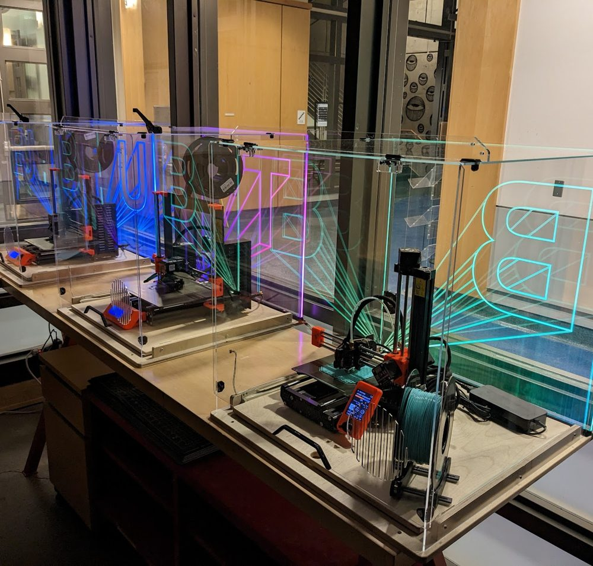

3D Printers
3D printing equipment and materials are labeled PURPLE.
Everybody: 3D printing hardware and software update frequently. Make sure you stay up to date, too.
Students: Help with 3D printing for class assignments should come from your class LAs or TAs first, then the Mischief Makers if available.
Faculty: Class assignments requiring 3D printing should be coordinated by LAs, TAs, or instructors. Questions: zack.weaver@colorado.edu

The revolution will be printed
3D printers in the main space are for intended use only. Additional printers are available for experimentation; contact a Mischief Maker to set one up.
3D printing is also the subject of some workshops. See the BTU calendar.
Jobs are run first-come, first-served. Prusa Slicer is provided and required.
We are updating our file management system. For now, please work directly with BTU staff to get your parts going.
Intended use of BTU Lab 3D printers
- Do not alter any part of the machine.
- BTU uses PLA and ABS material only, unless other materials are agreed upon with BTU staff.
- Do not train yourself on the machine. We're here to help you learn, hands on.
- Do not use third-party slicing software. Use Prusa Slicer, as specified for each machine.
Equipment and materials
- Prusa Mk4 FDM printer (x3)
- Prusa Mk3S+ FDM printer (x3)
- Prusa MINI2 FDM printer (x4)
- Additional FDM printers for experimental projects (ask staff)
- 1.75mm PLA filament (black and random colors)
- 1.75mm ABS filament (black and random colors)
- Additional materials only with staff approval